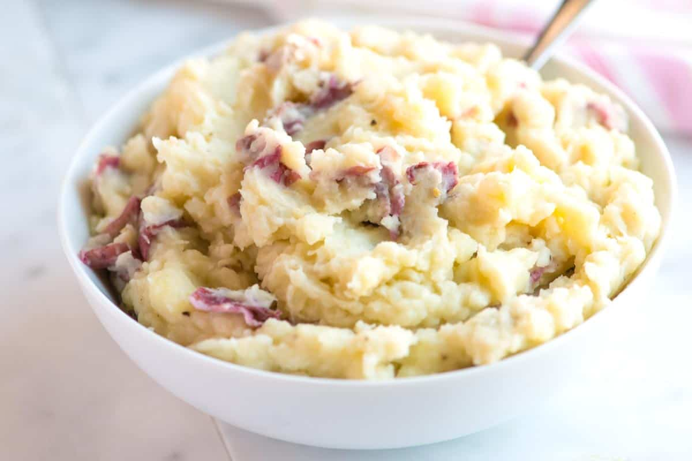

Home
Mashed Potatoes

Description
We adore mashed potatoes and make them often. Since we make a batch almost every week, we wanted to share our favorite way to make them. The recipe varies slightly depending on who makes it. Adam likes to keep the potatoes unpeeled and I usually peel. Sometimes we use milk, sometimes we add a splash of stock (vegetable or chicken stock). And when we’re feeling feisty, we add a spoonful of sour cream or splash of cream.
I use thin-skinned potatoes like creamers (or baby potatoes) or Yukon Gold. Small yellow, white, or red potatoes are perfect. They are quick to cook and make the best skin-on mashed potatoes! We are usually short on time, so the smaller potatoes allow us to skip peeling and just slice in half or quarters. I use thin-skinned potatoes like creamers (or baby potatoes) or Yukon Gold. Small yellow, white, or red potatoes are perfect. They are quick to cook and make the best skin-on mashed potatoes! We are usually short on time, so the smaller potatoes allow us to skip peeling and just slice in half or quarters.
Ingredients
- 2 pounds yellow, red, or white potatoes
- Salt
- 1 cup milk, stock, or a combination of the two
- 3 tablespoons butter or use olive oil
- 1/4 teaspoon fresh ground black pepper
- Splash or cream or a dollop of sour cream, optional
Steps
Prepare Potatoes
- Scrub then dice potatoes, making sure they are similar in size. (We often leave the skin on the potatoes, but it is completely up to you).
- Drop potatoes in a large saucepan, add a tablespoon of salt and cover with water. Bring to a boil over medium-high heat then reduce to a low simmer. Cook until the potatoes fall apart when pierced with a fork, 15 to 20 minutes.
To Finish
- Heat the milk or chicken stock, and the butter until warm and the butter has melted. Drain then return the potatoes to the saucepan and cover with a clean dishtowel. Leave them for about 5 minutes to absorb excess steam that can make mashed potatoes watery.
- Pour in the warm butter mixture then mash the potatoes until creamy. (Don’t worry if the potatoes seem a bit thin at first, they absorb the liquid after a minute or two). Stir in the pepper and splash of cream or sour cream (if using).
- Taste for seasoning and adjust with additional salt and pepper. Let stand for 5 minutes so that the potatoes thicken, and then serve.